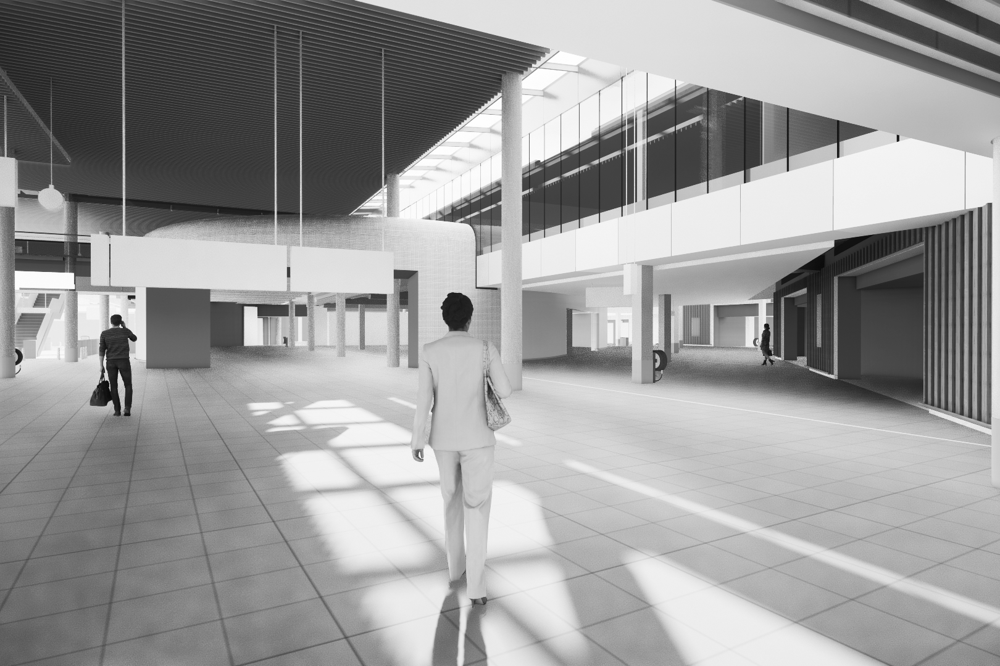

Hidden Home Anker
Hidden About Anker
INTRODUCTION · HYBRID HYDRO HABITAT
Amsterdam South East, the Netherlands, 2050,
This project tackles the future Dutch problem on water-management and energy retention by using water's potential energy to store energy within architecture. A project which presents technical solutions and translates them into architecture.
Waterstructure · Amsterdam Area

Amsterdam is a city known for its authentic canal structure. The area is a so-called 'polder' landscape. This means that this area had been drained and reclaimed. One can therefore notice an interesting pattern of didges within the cultured landscape of this area (see image above). With an upcoming risk for flooding in certain seasons of the year combined with extremely dry periods in the summer and moreover salinization of the groundwater, this area faces increasingly complicated water-management challenges.
Additionally, while we are moving towards an electric based energy system the challenge arises of the imbalance between the demand and the supply of energy through renewables. The sun is after all not always shining when we need solar energy and at other times the wind blows while our energy demand is low. The question therefore is: "how do we store our energy?" Batteries come in handy. But what if we use the seasonal nature of the water supply within water management and use this phenomenon as a foundation for a water battery? This way we can tackle two environmental problems simultaneously.
The following project incooperates an architectural manifestation of a water battery.
PROJECT PROPOSAL
As introduced beforehand this project proposes a water battery within the built environment. Water is hereby stored within the architecture of the building and its construction. This pioneer project completely exposes and exhibits the movement of the water as it travels through the engineered water/energy system, creating an interesting experience for the visitor. The engineered system behind the actual battery can be found here: click here
"A Waterfall"

The architecture of this construction and building resembles the structure of a waterfall.

"An ongoing approach of designing with water"

"This project embodies a similar integrative approach of looking at architecture as the engineers/architects of the traditional Dutch windmills did. The traditional Dutch windmill as an energy machine is not only an engineered entity but also an architectural entity. Just like this new proposal that is proposed here."
